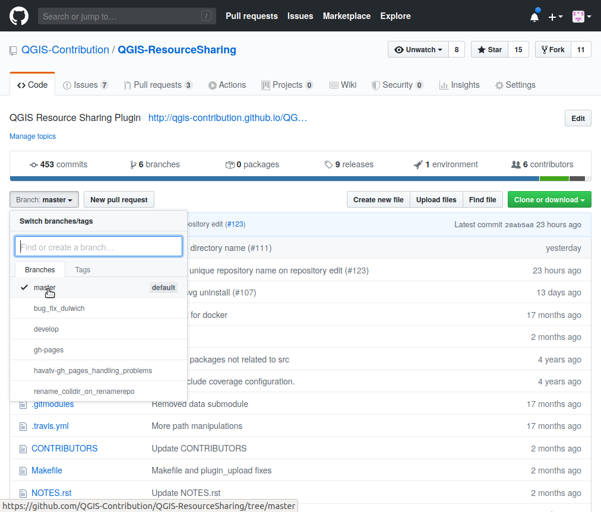

Problems and solutions¶
Polluted SVG search path¶
If the local collection directories have changed location in the file system, the SVG search path may not have been updated, and the old location will still be included in the search path.
Old locations can be removed from the search path by editing searchPathsForSVG under svg in the QGIS settings (Settings-> Options-> Advanced), or in the QGIS3.ini file that is located under QGIS in the user QGIS folder.
Strange and/or old tag names in Style Manager¶
Earlier versions of the plugin used non-inutitive tag names for grouping symbols, colormaps, labelsettings and textformats in the Style Manager. This has been improved in later versions.
When a repository is been renamed, new tag names are generated in Style Manager, but the old ones will remain.
To clean up the “mess”, remove the strange / old tags by right-clicking on the tag name in the left part of the Style Manager dialogue and Remove.
Reload the collections to get missing style elements from the collections back in the Style Manager.
Collection directories are not removed¶
If there are subdirectories in the collections directory (/.local/share/QGIS/QGIS3/profiles/default/resource_sharing/collections
on Ubuntu, C:\Users\<user>\AppData\Roaming\QGIS\QGIS3\profiles\default\resource_sharing\collections
on Windows) that do not correspond to installed collections, you can safely remove them.
Repository directories are not removed¶
If there are subdirectories in the repositories directory (/.local/share/QGIS/QGIS3/profiles/default/resource_sharing/repositories on Ubuntu, C:\Users\<user>\AppData\Roaming\QGIS\QGIS3\profiles\default\resource_sharing\repositories
on Windows) that do not correspond to officially approved QGIS repositories, you can safely remove them.
Starting with a clean sheet¶
If everything has turned out to be a mess (might happen after plugin upgrades that adds new “features”), and you would like to remove all installed collections and clean up, you can:
Remove the
resource_sharingdirectory in your QGIS user folder (/.local/share/QGIS/QGIS3/profiles/default/QGISon Ubuntu,C:\Users\<user>\AppData\Roaming\QGIS\QGIS3\profiles\default\QGISon Windows). That will remove the cache, the local copies/clones of the repositories and the local copies of the collections.Remove
localCollectionDirunder[ResourceSharing]in QGIS settings (Settings-> Options-> Advanced), or in the QGIS3.ini file that is located under QGIS in the user QGIS folder.Remove the
repositorygroup (the group has one entry for each repository and one entry for theonline_directories) under[ResourceSharing]in QGIS settings (Settings-> Options-> Advanced), or in the QGIS3.ini file that is located under QGIS in the user QGIS folder).If you have used an early version (pre 0.10.0), you may also want to remove the
~/QGIS/Resource Sharingdirectory.Remove all Resource Sharing related directories from the SVG search path by editing searchPathsForSVG under
svgin QGIS settings (Settings-> Options-> Advanced), or in the QGIS3.ini file that is located underQGISin the user QGIS folder.Reinstall the plugin
Installing developing versions¶
If you would like to test upcoming features of the plugin, or help fixing bugs, it is possible to download the plugin directly from github.
The most common would be to download the master branch (https://github.com/QGIS-Contribution/QGIS-ResourceSharing/archive/master.zip), but all branches can be downloaded.
Start a web browser and open https://github.com/QGIS-Contribution/QGIS-ResourceSharing.
Choose the Branch you would like to download, click the Clone or download button/pull-down and Download ZIP.

Save the ZIP file.
Go to the plugin directory (
python/plugins, in your QGIS user directory)Remove the currently installed version of the plugin (
qgis_resource_sharing, if you have installed from the official QGIS plugin repository).Unzip the downloaded file in the plugin directory. If you downloaded the master branch, the subdirectory with the plugin will be named
QGIS-ResourceSharing-master. If you rename the subdirectory toqgis_resource_sharing, you can start QGIS and run the new version of the plugin. If you choose not to rename the directory, you have to go through the last two steps.Start QGIS. Since the name of the plugin subdirectory of the Resource Sharing plugin has changed from
qgis_resource_sharingtoQGIS-ResourceSharing-master(if you have downloaded the master branch), the plugin has become disabled, and the next step will be necessary.Open the Plugin Manager and (re)enable the plugin.